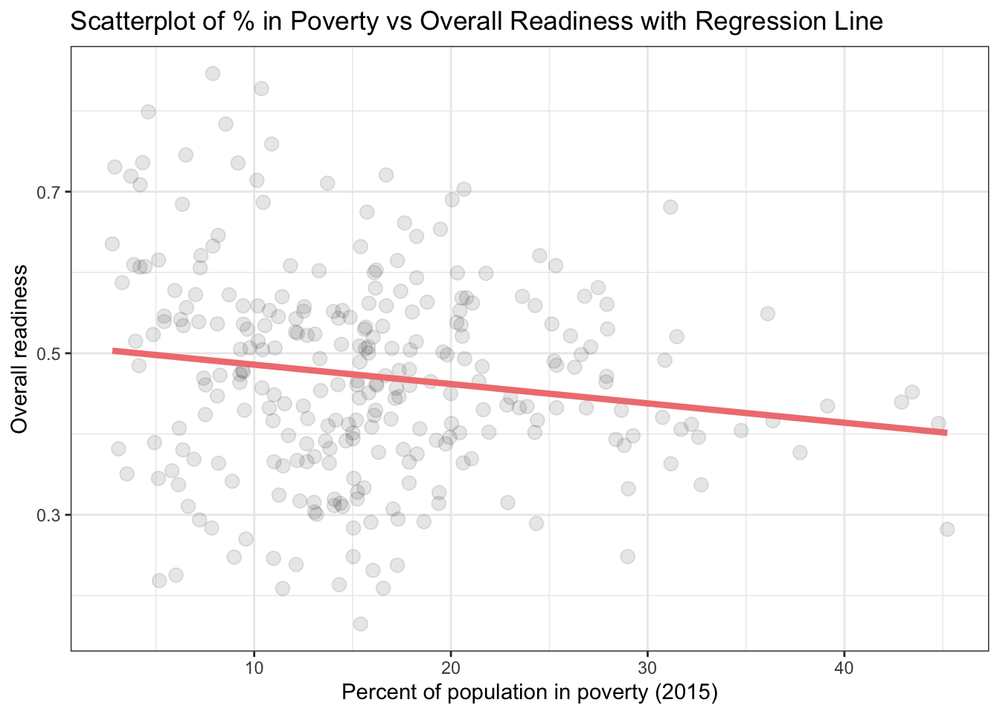

knitr::opts_chunk$set(echo = TRUE)
# load all the packages needed
library(tidyverse)
library(readr)
library(gt)
library(tufte)
library(sf)
library(feasts)
library(dplyr)
library(janitor)
library(ggplot2)
# set the filepath
rootdir <- ("/Users/lianechen/Documents/MEDS_2023/Fall_2023/EDS222/Final/eds222-climateadapt")
datadir <- file.path(rootdir,"data")
# import data
city_indicators <- read.csv("data/City Indicators.csv")
readiness <- read.csv("data/Overall Risk & Readiness Scores.csv")Introduction
This blog post will explore analysis conducted on whether poverty impacts a city’s overall readiness to implement climate adaptation measures at both national and regional levels in the United States.
Research Question
What impact does the percentage of population in poverty have on a city’s overall readiness score for climate adaptation?
Motivation
Climate change is upon us. The task of addressing its intensifying effects is daunting and more urgent than ever. We need to adapt to climate change now, which means taking action to adjust to its present and future impacts (EU 2023).
Adaptation and resilience refers to adjustments in ecological, social or economic systems in response to actual or expected climatic stimuli and their effects. At the global stage, we have seen governments iterate the importance of climate adaptation and resilience. Adopted in 2015 and signed in 2016, the Paris Agreement is a legally binding international treaty on climate change. All Parties to the Paris Agreement committed to strengthening the global response to climate change by increasing the ability of all to adapt and build resilience, and reduce vulnerability. In order to do so, governments will need access to clear and accurate data as they move to prepare our economies and communities as a whole. It is important to consider the effects of adaptation on less resourced communities, as poor populations tend to be the most vulnerable to climate change and least able to adapt because of limited capacity to cope with climate variability and extremes. For example, many socially vulnerable groups (i.e., low-income households, communities of color, the unhoused, and immigrant populations) live in urban areas that are prone to extreme heat (urban heat islands). Some may also live in housing that does have adequate insulation or cooling. Others may not be able to afford air conditioning. It should be noted that this is just one aspect of social vulnerability and overlaps may occur.
This analysis will provide exploratory analysis on whether poverty is a factor in how ready a city is for climate change. A total of 278 cities within the United States, including 50 states and Puerto Rico, whose populations are above 100,000 people will be examined.
Data
Climate adaptation readiness (hereon referred to as ‘climate readiness’) and poverty data used for this analysis is publicly available from the Notre Dame Global Adaptation Initiative through its Urban Adaptation Assessment. The data is available in CSV format, with nine independent files that reflect data used to generate each of the hazard scores and forecasts and the primary data at the city level and sub-city level (census tract). Each file has a common city, state and geographic identifiers (GEOIDs) variable that permits easy identification and merging, if necessary. The City Indicators.csv and Overall Risk & Readiness Scores.csv files were both used for the analysis.
Data Analysis
I started with basic analysis to explore the data. Luckily, the two data files have common geospatial and temporal features that allowed for easy manipulation and use. Minor cleaning was required to correct inaccurate spelling and to ensure uniform formatting in column names. Once I checked that both data files had matching cities and number of observations, I combined the datasets based on city names to create a merged dataframe which includes percentage of population in poverty and overall climate adaptation readiness. I also removed certain columns to make the merged dataframe easier to work with.
Next, I chose to conduct a simple linear regression model as the two variables I am studying are numeric values. I used ‘ggplot’ to create a scatter plot comparing the percent of population in poverty to the climate readiness score for each city. Then I used ‘geom_smooth()’ to plot the linear regression between poverty and climate readiness. As a basic gut check, the line shows that there is a negative correlation between the two variables, which makes sense as higher poverty would decrease ability to implement costly climate adaptation measures.
I also conducted a two-tailed t-test to see whether there was a difference in the impact of poverty on climate readiness between two regions (West and South).
# clean column names for both datasets
city_indicators <- clean_names(city_indicators)
readiness <- clean_names(readiness)
# check number of observations for city_indicators file
nrow(city_indicators)[1] 278# check number of observations for readiness file
nrow(readiness)[1] 278# merge city_indicators and readiness files by city name
merged <- merge(city_indicators, readiness, by = "city", all = TRUE)
# check that number of obersvations is consistent
nrow(merged)[1] 278# clean column names
colnames(merged)[colnames(merged) == "geo_id.x"] <- "geo_id"
colnames(merged)[colnames(merged) == "state.x"] <- "state"
colnames(merged)[colnames(merged) == "latitutde"] <- "latitude"
# streamline the columns so only relevant ones are kept
income_readiness <- merged[, c("city", "state", "geo_id", "percent_of_population_spending_over_50_percent_of_income_on_rent_2015", "percent_of_population_in_poverty_2015", "latitude", "longitude", "county", "region", "median_income", "overall_readiness")]# create scatter plot with simple regression line included
ggplot(data=income_readiness, aes(x=percent_of_population_in_poverty_2015, y = overall_readiness)) +
geom_point(alpha=0.1, size=3) +
geom_smooth(method='lm', formula= y~x, color="lightcoral", se=F, linewidth=1.5) +
theme_bw() +
labs(title = "Scatterplot of % in Poverty vs Overall Readiness with Regression Line",
x = "Percent of population in poverty (2015)", y = "Overall readiness")
The slope of the regression line shows to be slightly negative, as y decreases while x increases. This seems to make intuitive sense, as increased poverty could relate to decreased ability to adapt to climate variability and extremes.
The slope is not too steep, so let’s take a look at correlation to see how strongly poverty impacts climate adaptation readiness.
# compute the correlation coefficient to quantify the strength and direction of the relationship between poverty and climate readiness
cor(income_readiness$percent_of_population_in_poverty_2015, income_readiness$overall_readiness)[1] -0.1565957Magnitude of the Correlation Coefficient:
The correlation coefficient ranges from -1 to 1. A value of -1 indicates a perfect negative correlation, 0 indicates no correlation, and 1 indicates a perfect positive correlation.
In this case, the value is very close to 0, which suggests a weak correlation.
Sign of the Correlation Coefficient:
The negative sign indicates a negative correlation. A negative correlation means that as one variable (percentage in poverty) increases, the other variable (overall adaptation readiness) tends to decrease.
This matches the slight negative slope of the regression line.
Interpretation:
With a correlation coefficient of -0.1565957, there is a slight tendency that areas with a higher percentage of people in poverty may have lower overall adaptation readiness. However, the correlation is weak, suggesting that other factors not considered in this analysis may play a more significant role in determining overall adaptation readiness.
# linear regression model
linear_regression <- lm(overall_readiness ~ percent_of_population_in_poverty_2015, data = income_readiness)
# summary of the model
summary(linear_regression)
Call:
lm(formula = overall_readiness ~ percent_of_population_in_poverty_2015,
data = income_readiness)
Residuals:
Min 1Q Median 3Q Max
-0.30807 -0.08339 -0.00655 0.07662 0.35538
Coefficients:
Estimate Std. Error t value Pr(>|t|)
(Intercept) 0.5098146 0.0163942 31.097 < 2e-16
percent_of_population_in_poverty_2015 -0.0023953 0.0009093 -2.634 0.00891
(Intercept) ***
percent_of_population_in_poverty_2015 **
---
Signif. codes: 0 '***' 0.001 '**' 0.01 '*' 0.05 '.' 0.1 ' ' 1
Residual standard error: 0.124 on 276 degrees of freedom
Multiple R-squared: 0.02452, Adjusted R-squared: 0.02099
F-statistic: 6.938 on 1 and 276 DF, p-value: 0.008913Intercept (0.5098146):
The intercept represents the estimated value of the dependent variable when all independent variables are zero.
In this context, when the percentage of the population in poverty is zero, the estimated value of overall adaptation readiness is approximately 0.5098.
# let's look at coefficients
summary(linear_regression)$coefficients Estimate Std. Error t value
(Intercept) 0.509814590 0.0163942390 31.097179
percent_of_population_in_poverty_2015 -0.002395259 0.0009093408 -2.634061
Pr(>|t|)
(Intercept) 3.482886e-92
percent_of_population_in_poverty_2015 8.913263e-03Percentage of Population in Poverty Coefficient (-0.0023953):
The coefficient for the variable “percent_of_population_in_poverty_2015” represents the estimated change in the dependent variable (overall adaptation readiness) for a one-unit change (one-percent) in the independent variable (percentage of population in poverty).
In this case, for every one-unit increase in the percentage of the population in poverty, the overall adaptation readiness is estimated to decrease by approximately 0.0024.
The t-value of -2.634 indicates that this coefficient is statistically significant (p = 0.00891), suggesting that the percentage of the population in poverty has a significant effect on overall adaptation readiness.
In summary, the model suggests that both the intercept and the percentage of the population in poverty are statistically significant in predicting overall adaptation readiness.
Two-Tailed T-Testing
I am curious whether there is a difference between how poverty impacts climate readiness in different regions of the country. Let’s conduct a two-tailed t-test.
# compute point estimate
pt_est_poverty_west = income_readiness %>%
filter(region == "West") %>%
summarize(mean(percent_of_population_in_poverty_2015))
pt_est_poverty_south = income_readiness %>%
filter(region == "South") %>%
summarize(mean(percent_of_population_in_poverty_2015))
point_est = as.numeric(pt_est_poverty_west - pt_est_poverty_south)
print(point_est) [1] -3.538473# compute standard error
n1 = income_readiness %>% filter(region == "West") %>% count()
n2 = income_readiness %>% filter(region == "South") %>% count()
s1 = income_readiness %>% filter(region == "West") %>% summarize(sd(percent_of_population_in_poverty_2015, na.rm = TRUE))
s2 = income_readiness %>% filter(region == "South") %>% summarize(sd(percent_of_population_in_poverty_2015, na.rm = TRUE))
SE = as.numeric(sqrt(s1^2/n1 + s2^2/n2))
print(SE)[1] 1.18189# compute test statistic
zscore = (point_est - 0)/SE
print(zscore)[1] -2.99391#construct two-tailed t-test
two_tailed <- t.test(income_readiness$overall_readiness[income_readiness$region=="West"], income_readiness$overall_readiness[income_readiness$region=="South"])
#print
two_tailed
Welch Two Sample t-test
data: income_readiness$overall_readiness[income_readiness$region == "West"] and income_readiness$overall_readiness[income_readiness$region == "South"]
t = -2.4308, df = 92.995, p-value = 0.01698
alternative hypothesis: true difference in means is not equal to 0
95 percent confidence interval:
-0.11160120 -0.01124421
sample estimates:
mean of x mean of y
0.3952240 0.4566467 Interpreting P-value and Hypothesis Testing for Different Regions (West and South) p-value: 0.01698
Null: The mean score for overall climate readiness in the West region is equal to the mean score for overall climate readiness in the South region when considering the impact of poverty (no difference). H_0: u_WestReadiness - u_SouthReadiness = 0
Alternative: The mean score for overall climate readiness in the West region is NOT equal to the mean score for overall climate readiness in the South region when considering the impact of poverty (yes, there is a difference). H_A: u_WestReadiness - u_SouthReadiness != 0
Given that the p-value is less than the significance level of ‘alpha=0.05’, we reject the null hypothesis. Therefore, we can say that there is a difference in mean overall climate readiness between the West and the South when considering the impact of poverty.
Results
We are able to reject the null hypothesis and conclude that the percentage of people living in poverty does indeed have an impact on a city’s climate readiness score. It should be noted that while there is a correlation, it is relatively weak, which suggests that further analysis should be completed.
Future Work
Correlation does not imply causation. Even though we found above that there is a correlation, it doesn’t necessarily mean that poverty causes lower adaptation readiness or vice versa. Other factors might contribute to the observed relationship. Future work should explore additional variables and regression analysis to better understand the specific nature and strength of the relationship, with controls included. Further assess the statistical significance of the correlation coefficient to determine whether the observed relationship is likely due to chance.
In summary, the negative correlation coefficient suggests a weak tendency for areas with a higher percentage of people in poverty to have lower overall adaptation readiness. The strength of this relationship is not strong, and it’s important to interpret such correlations cautiously, considering other factors that might influence the observed pattern. Potential areas for further work are described below.
More Cities Data
The datasets used included 278 cities within the United States, including 50 states and Puerto Rico, whose populations are above 100,000 people. However, increased data for cities with population under 100,000 would provide a broader understanding of potential opportunity areas for climate adaptation.
Additional Years of Poverty Data
This analysis would benefit from additional years of data for percentage of populations living in poverty from the Census. While these numbers would likely not vary too dramatically between years, it would provide more accurate data.
Wealth Data
We have available data for percentage of populations living in poverty, but what about wealthy populations? It would be helpful (and interesting!) to be able to statistically compare whether wealth has an impact on climate readiness.
Code Availability
https://github.com/lchenhub/eds222-climate-adaptation.git
References
Data
- University of Notre Dame, Global Adaptation Initiative: https://gain-uaa.nd.edu/
Literature Cited
European Union(EU) 2003. European Commission, Adaptation to climate change. https://climate.ec.europa.eu/eu-action/adaptation-climate-change_en
United Nations 2023a. Climate Adaptation. https://www.un.org/en/climatechange/climate-adaptation
United Nations 2023b. New elements and dimensions of adaptation under the Paris Agreement (Article 7). https://unfccc.int/topics/adaptation-and-resilience/the-big-picture/new-elements-and-dimensions-of-adaptation-under-the-paris-agreement-article-7
United Stated Environmental Protection Agency 2023. Climate Change and the Health of Socially Vulnerable People. Last updated October 16, 2023. https://www.epa.gov/climateimpacts/climate-change-and-health-socially-vulnerable-people#:~:text=Increases%20in%20average%20and%20extreme,including%20certain%20socially%20vulnerable%20groups.&text=These%20include%20low%2Dincome%20households,experiencing%20homelessness%2C%20and%20immigrant%20populations
Citation
BibTeX citation:
@online{chen2023,
author = {Chen, Liane},
title = {Impact of {Poverty} on a {City’s} {Overall} {Readiness} for
{Climate} {Adaptation}},
date = {2023-12-15},
url = {https://lchenhub.github.io/blog/2023-12-15-Poverty-and-Climate-Readiness/},
langid = {en}
}
For attribution, please cite this work as:
Chen, Liane. 2023. “Impact of Poverty on a City’s Overall
Readiness for Climate Adaptation.” December 15, 2023. https://lchenhub.github.io/blog/2023-12-15-Poverty-and-Climate-Readiness/.